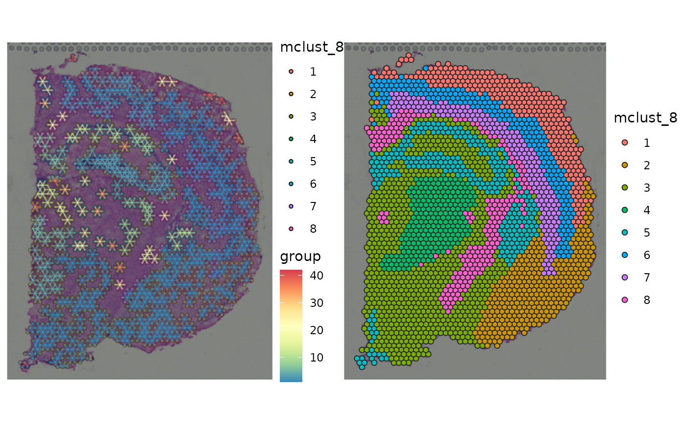
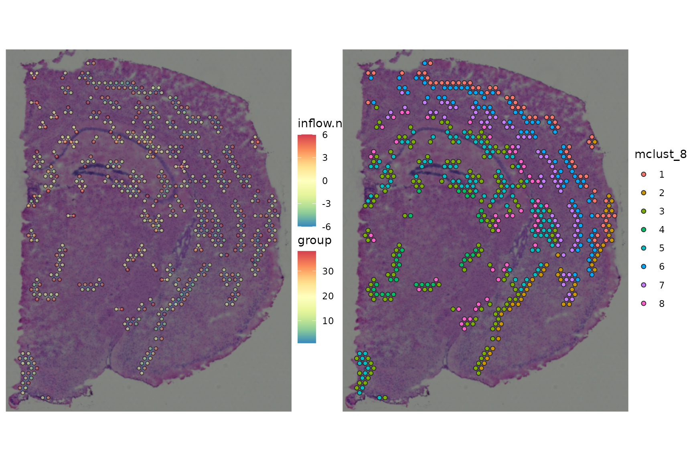
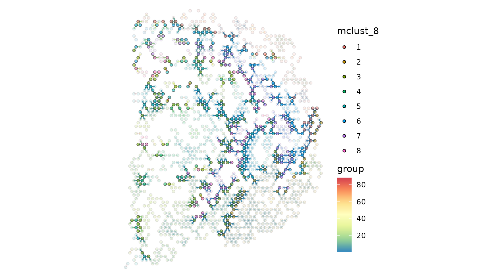
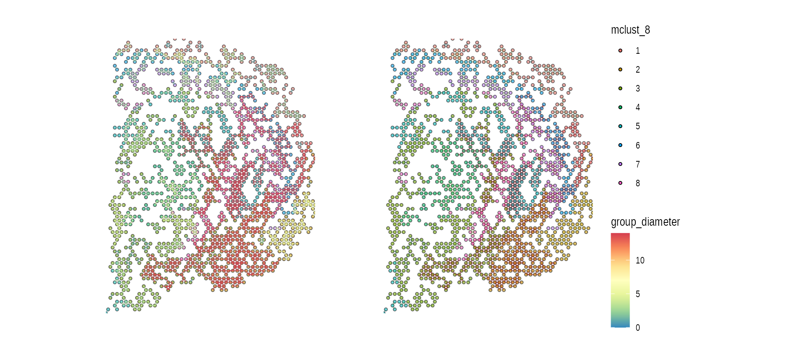
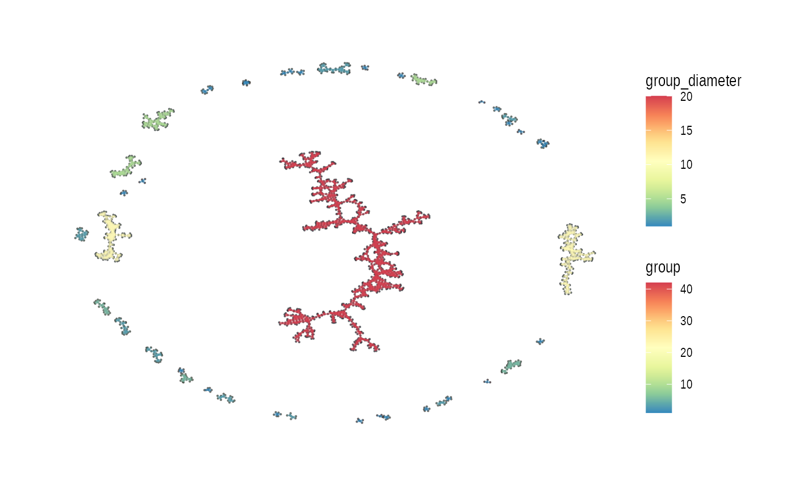
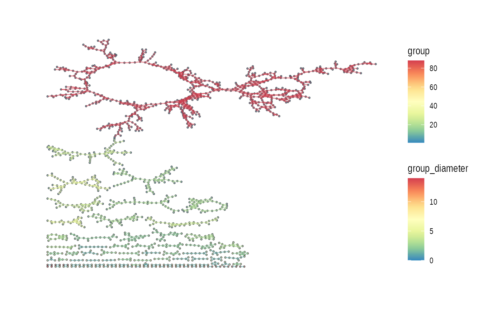
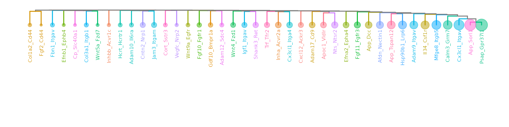
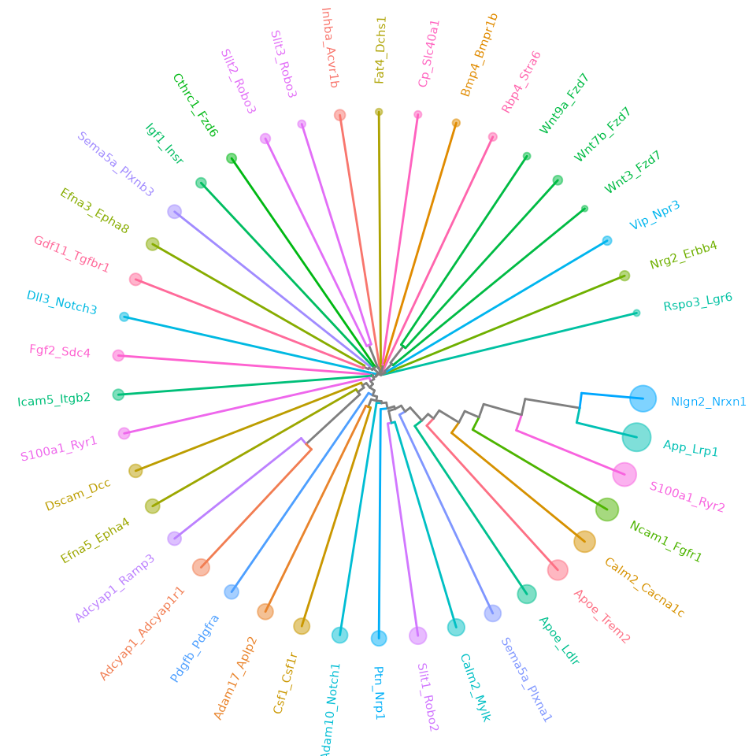

Ligand-Receptor Database
Load built-in LRdb
This LRdb is downloaded from CellTalkDB: [http://tcm.zju.edu.cn/celltalkdb/download.php]. You can see the detail by:
?LRdb_human
?LRdb_mouseWe also created getter functions, get_LRdb() and get_LRdb_small(), to retrieve the database.
LRdb_m <-
get_LRdb_small("mouse")
LRdb_m %>%
dplyr::arrange(ligand_gene_symbol, receptor_gene_symbol)
#> # A tibble: 105 × 10
#> LR ligand_gene_symbol receptor_gene_symbol ligand_gene_id receptor_gene_id
#> <chr> <chr> <chr> <dbl> <dbl>
#> 1 Adcy… Adcyap1 Ramp3 11516 56089
#> 2 Agt_… Agt Agtr1a 11606 11607
#> 3 Alka… Alkal2 Alk 100294583 11682
#> 4 Angp… Angptl3 Itgb3 30924 16416
#> 5 Apoa… Apoa1 Lrp2 11806 14725
#> 6 Apoe… Apoe Sdc1 11816 20969
#> 7 App_… App Dcc 11820 13176
#> 8 App_… App Trpc6 11820 22068
#> 9 Bmp1… Bmp10 Bmpr1a 12154 12166
#> 10 Bmp2… Bmp2 Bmpr1a 12156 12166
#> # ℹ 95 more rows
#> # ℹ 5 more variables: ligand_ensembl_protein_id <chr>,
#> # receptor_ensembl_protein_id <chr>, ligand_ensembl_gene_id <chr>,
#> # receptor_ensembl_gene_id <chr>, evidence <chr>Load Visium spatial transcriptomic data
data_dir <- file.path(base_dir, "example", "visium_tutorial")
spe_brain <-
SpatialExperiment::read10xVisium(samples = data_dir,
type = "HDF5",
data = "filtered")
# to keep track of cell IDs
# spe_brain[["cell_id"]] <- colnames(spe_brain)
# Log-Normalize
spe_brain <- scater::logNormCounts(spe_brain) Cell cluster data
Now, let’s read cell cluster data, obtained using GraphST.
cell_clusters <-
read.csv(file.path(data_dir, "outs", "graphST.csv"), row.names = 1)
# Make sure the rows of cell_clusters are in the same order of spe_brain.
cell_clusters <- cell_clusters[colnames(spe_brain), ]
cluster_ids <- colnames(cell_clusters)
cluster_ids <- cluster_ids[grep("mclust_", cluster_ids)]
for (cid in cluster_ids) {
spe_brain[[cid]] <- factor(cell_clusters[[cid]])
}
plot_spatial_feature(spe = spe_brain, feature = "mclust_8")
Compute Cell-Cell Communications over ligand-receptor pairs
# For full LRdb analysis, future::plan can be used
# for parallelization
# future::plan(future::multisession, workers = 4)
tictoc::tic()
ccc_tbl <- compute_spatial_ccc(spe = spe_brain,
assay_name = "logcounts",
LRdb = LRdb_m)
tictoc::toc()
#> 32.866 sec elapsed
# future::plan(future::sequential)
ccc_tbl %>%
dplyr::arrange(desc(LRscore))
#> # A tibble: 133,813 × 10
#> src dst d norm.d LR ligand receptor LRscore weight WLRscore
#> <chr> <chr> <dbl> <dbl> <chr> <chr> <chr> <dbl> <dbl> <dbl>
#> 1 CTCGAGGTCGA… TAGC… 138 1.01 Nptx… Nptx1 Nptxr 0.868 0.986 0.855
#> 2 CGCGTTCATGA… CGCG… 0 0 Nptx… Nptx1 Nptxr 0.868 1 0.868
#> 3 TAGCTAAGTCC… TAGC… 0 0 Nptx… Nptx1 Nptxr 0.867 1 0.867
#> 4 CCAGGGACGTG… CGCG… 137 1 Nptx… Nptx1 Nptxr 0.867 1 0.867
#> 5 CCTGCTATTTG… CGCG… 138. 1.01 Nptx… Nptx1 Nptxr 0.866 0.980 0.848
#> 6 CGCGTTCATGA… CCAG… 137 1 Nptx… Nptx1 Nptxr 0.865 1 0.865
#> 7 GAGACTGATGG… TAGC… 138. 1.01 Nptx… Nptx1 Nptxr 0.865 0.987 0.853
#> 8 CCAGGGACGTG… CCAG… 0 0 Nptx… Nptx1 Nptxr 0.864 1 0.864
#> 9 TAGCTAAGTCC… GAGA… 138. 1.01 Nptx… Nptx1 Nptxr 0.864 0.987 0.853
#> 10 CTCGAGGTCGA… TGCA… 138. 1.01 Nptx… Nptx1 Nptxr 0.864 0.980 0.846
#> # ℹ 133,803 more rowsAdd cluster lables to CCC table.
ccc_tbl <-
ccc_tbl %>%
amend_ccc_table_with_cell_annots(spe = spe_brain, annot_cols = c("mclust_8", "mclust_10")) %>%
set_ccc_table_default_cluster("mclust_8")Summarize cell-cell communication between cell clusters
ccc_tbl_between_clusters <-
ccc_tbl %>%
dplyr::group_by(mclust_8.src, mclust_8.dst, LR) %>%
dplyr::summarise(n = dplyr::n(),
LRscore.sum = sum(LRscore),
WLRscore.sum = sum(WLRscore))
#> `summarise()` has grouped output by 'mclust_8.src', 'mclust_8.dst'. You can
#> override using the `.groups` argument.
ccc_tbl_between_clusters %>%
dplyr::arrange(desc(n))
#> # A tibble: 1,666 × 6
#> # Groups: mclust_8.src, mclust_8.dst [46]
#> mclust_8.src mclust_8.dst LR n LRscore.sum WLRscore.sum
#> <fct> <fct> <chr> <int> <dbl> <dbl>
#> 1 3 3 Rtn4_Cntnap1 3467 2517. 2489.
#> 2 3 3 Fgf13_Fgfr3 3269 2202. 2179.
#> 3 3 3 Nptx1_Nptxr 2794 1895. 1875.
#> 4 3 3 Nxph1_Nrxn1 2494 1765. 1746.
#> 5 2 2 Nptx1_Nptxr 2060 1648. 1630.
#> 6 3 3 Hras_Grin2d 2052 1406. 1390.
#> 7 1 1 Nptx1_Nptxr 1717 1368. 1353.
#> 8 2 2 Rtn4_Cntnap1 1664 1233. 1219.
#> 9 2 2 Fgf13_Fgfr3 1606 1114. 1101.
#> 10 3 3 Pnoc_Oprl1 1541 982. 971.
#> # ℹ 1,656 more rows
ccc_tbl_between_clusters %>%
dplyr::filter(mclust_8.dst != mclust_8.src) %>%
dplyr::arrange(desc(n))
#> # A tibble: 1,259 × 6
#> # Groups: mclust_8.src, mclust_8.dst [38]
#> mclust_8.src mclust_8.dst LR n LRscore.sum WLRscore.sum
#> <fct> <fct> <chr> <int> <dbl> <dbl>
#> 1 3 5 Nptx1_Nptxr 253 190. 188.
#> 2 3 5 Rtn4_Cntnap1 249 183. 181.
#> 3 5 3 Nptx1_Nptxr 241 181. 178.
#> 4 3 5 Fgf13_Fgfr3 199 136. 134.
#> 5 5 3 Rtn4_Cntnap1 191 142. 140.
#> 6 5 3 Fgf13_Fgfr3 190 135. 133.
#> 7 8 3 Rtn4_Cntnap1 151 113. 112.
#> 8 1 6 Nptx1_Nptxr 138 108. 106.
#> 9 7 6 Rtn4_Cntnap1 137 104. 103.
#> 10 1 6 Rtn4_Cntnap1 133 102. 100.
#> # ℹ 1,249 more rowsConvert CCC table to CCC graph
The conversion also adds various graph metrics to each CCC graph.
tictoc::tic("to_spatical_ccc_graph ...")
sp_col_data <- get_spatial_data(spe_brain)
ccc_graph_list <-
to_spatial_ccc_graph_list(ccc_tbl, sp_col_data, workers = 6)
tictoc::toc()
#> to_spatical_ccc_graph ...: 130.397 sec elapsedsummarize_ccc_graph_metrics() summarize those graph metrics for each LR pair.
tictoc::tic()
ccc_graph_metrics_summary_df <-
summarize_ccc_graph_metrics(ccc_graph_list)
tictoc::toc()
#> 0.323 sec elapsed
ccc_graph_metrics_summary_df %>%
dplyr::arrange(graph_component_count)
#> # A tibble: 51 × 12
#> LR graph_n_nodes graph_n_edges graph_component_count graph_motif_count
#> <chr> <int> <dbl> <dbl> <int>
#> 1 Rtn4_Cnt… 2663 13683 3 24385
#> 2 Nxph1_Nr… 2469 8058 3 16003
#> 3 Fgf13_Fg… 2531 12013 3 21895
#> 4 Nptx1_Np… 2496 12674 4 21230
#> 5 Vegfa_Fl… 1974 4676 15 8407
#> 6 Hras_Gri… 2177 5633 19 11524
#> 7 Psen1_Ne… 1935 4865 21 8604
#> 8 Il34_Csf… 2154 6780 22 12742
#> 9 Psen1_Er… 1794 3835 30 6426
#> 10 Col4a1_I… 1867 4026 35 6700
#> # ℹ 41 more rows
#> # ℹ 7 more variables: graph_diameter <dbl>, graph_un_diameter <dbl>,
#> # graph_mean_dist <dbl>, graph_circuit_rank <dbl>, graph_reciprocity <dbl>,
#> # graph_clique_num <int>, graph_clique_count <int>summarize_ccc_graph_metrics(…, level = “group”) summarizes the metrics for each subgraph (group) in CCC graph (LR)
tictoc::tic()
ccc_graph_group_metrics_summary_df <-
summarize_ccc_graph_metrics(ccc_graph_list, level = "group")
tictoc::toc()
#> 0.334 sec elapsed
ccc_graph_group_metrics_summary_df
#> # A tibble: 3,874 × 12
#> LR group group_n_nodes group_n_edges group_adhesion group_motif_count
#> <chr> <int> <int> <dbl> <dbl> <int>
#> 1 Rtn4_Cntn… 1 2653 13653 0 24373
#> 2 Rtn4_Cntn… 2 5 15 0 8
#> 3 Rtn4_Cntn… 3 5 15 1 4
#> 4 Pnoc_Oprl1 31 5 4 0 4
#> 5 Pnoc_Oprl1 1 716 2095 0 3479
#> 6 Pnoc_Oprl1 55 2 1 0 0
#> 7 Pnoc_Oprl1 2 190 330 0 517
#> 8 Pnoc_Oprl1 23 6 7 0 5
#> 9 Pnoc_Oprl1 5 31 47 0 72
#> 10 Pnoc_Oprl1 3 93 158 0 290
#> # ℹ 3,864 more rows
#> # ℹ 6 more variables: group_diameter <dbl>, group_un_diameter <dbl>,
#> # group_mean_dist <dbl>, group_girth <dbl>, group_circuit_rank <dbl>,
#> # group_reciprocity <dbl>Visualization
LR_of_interest <- "App_Dcc"
ccc_graph_list[[LR_of_interest]] %>%
tidygraph::activate(edges) %>%
tibble::as_tibble()
#> # A tibble: 3,822 × 40
#> from to src dst d norm.d LR ligand receptor LRscore weight
#> <int> <int> <chr> <chr> <dbl> <dbl> <chr> <chr> <chr> <dbl> <dbl>
#> 1 1 577 AAACAAGT… CAGC… 138 1.01 App_… App Dcc 0.745 0.986
#> 2 1 1938 AAACAAGT… TTCT… 138. 1.01 App_… App Dcc 0.685 0.980
#> 3 2 1569 AAACAATC… TAGT… 138 1.01 App_… App Dcc 0.739 0.986
#> 4 3 1251 AAACACCA… GGAA… 138 1.01 App_… App Dcc 0.671 0.986
#> 5 4 4 AAACAGAG… AAAC… 0 0 App_… App Dcc 0.798 1
#> 6 4 581 AAACAGAG… CAGC… 138. 1.01 App_… App Dcc 0.771 0.980
#> 7 5 5 AAACCGGG… AAAC… 0 0 App_… App Dcc 0.728 1
#> 8 5 805 AAACCGGG… CGCC… 138. 1.01 App_… App Dcc 0.726 0.980
#> 9 6 699 AAACCTCA… CCGA… 138. 1.01 App_… App Dcc 0.701 0.980
#> 10 6 1324 AAACCTCA… GGTA… 138. 1.01 App_… App Dcc 0.714 0.980
#> # ℹ 3,812 more rows
#> # ℹ 29 more variables: WLRscore <dbl>, mclust_8.src <chr>, mclust_10.src <chr>,
#> # mclust_8.dst <chr>, mclust_10.dst <chr>, cluster.src <chr>,
#> # cluster.dst <chr>, graph_n_nodes <int>, graph_n_edges <dbl>,
#> # graph_component_count <dbl>, graph_motif_count <int>, graph_diameter <dbl>,
#> # graph_un_diameter <dbl>, graph_mean_dist <dbl>, graph_circuit_rank <dbl>,
#> # graph_reciprocity <dbl>, graph_clique_num <int>, …spatial CCC graph plot with tissue image
gp_spccc <-
plot_spatial_ccc_graph(
ccc_graph = ccc_graph_list[[LR_of_interest]],
tissue_img = SpatialExperiment::imgRaster(spe_brain),
node_color = "mclust_8",
node_size = 1,
node_alpha = 0.5,
edge_color = "group",
# clip = TRUE,
which_on_top = "edge"
)
gp_spccc_0 <-
plot_spatial_feature(spe = spe_brain,
feature = "mclust_8")
wrap_plots(gp_spccc, gp_spccc_0, ncol = 2)
ccc_graph_temp <-
ccc_graph_list[[LR_of_interest]] %>%
tidygraph::activate("edges") %>%
tidygraph::filter(mclust_8.src != mclust_8.dst) %>%
tidy_up_ccc_graph()
cells_of_interest <-
ccc_graph_temp %>%
tidygraph::activate("nodes") %>%
dplyr::pull("name")
gp_spccc <-
plot_spatial_ccc_graph(
ccc_graph = ccc_graph_temp,
tissue_img = SpatialExperiment::imgRaster(spe_brain),
node_color = "inflow.n",
node_size = 1.25,
node_alpha = 1,
edge_color = "group",
show_arrow = TRUE,
# clip = TRUE,
which_on_top = "node"
)
gp_spccc_0 <-
plot_spatial_ccc_graph(
ccc_graph = ccc_graph_list[[LR_of_interest]],
tissue_img = SpatialExperiment::imgRaster(spe_brain),
image_alpha = 0,
cells_of_interest = cells_of_interest,
edges_expanded_to_group = FALSE,
node_color = "mclust_8",
node_size = 1.25,
node_alpha = 0.5,
edge_color = "group",
show_arrow = TRUE,
# clip = TRUE,
which_on_top = "node"
)
gp_spccc_1 <-
plot_spatial_feature(spe = spe_brain,
feature = "mclust_8",
cells_of_interest = cells_of_interest)
wrap_plots(gp_spccc, gp_spccc_1, ncol = 2)
gp_spccc_0
spatial CCC graph plot without tissue image
In this case, graph layout can be “spatial” which keeps the original spatial locations, or other graph layout algorithm supported by igraph package.
gp_spccc <-
plot_spatial_ccc_graph(
ccc_graph = ccc_graph_list[[LR_of_interest]],
graph_layout = "spatial",
node_color = "mclust_8",
node_size = 1,
edge_color = "group_diameter",
clip = TRUE,
# ghost_img = TRUE,
which_on_top = "edge"
)
gp_spccc_0 <-
plot_spatial_ccc_graph(
ccc_graph =
ccc_graph_list[[LR_of_interest]],
graph_layout = "spatial",
node_color = "mclust_8",
node_size = 1,
edge_color = "group_diameter",
clip = TRUE,
# ghost_img = TRUE,
which_on_top = "node"
)
wrap_plots(gp_spccc, gp_spccc_0, ncol = 2, guides = "collect")
Below uses “auto” layout (“kk” spring layout).
plot_spatial_ccc_graph(ccc_graph = ccc_graph_list[[LR_of_interest]],
# tissue_img = SpatialExperiment::imgRaster(spe_brain),
node_color = "group",
node_size = 0.1,
edge_color = "group_diameter",
edge_width = 0.1,
which_on_top = "edge")
In this case, below is “stress” layout.
plot_spatial_ccc_graph(ccc_graph = ccc_graph_list[[LR_of_interest]],
# tissue_img = SpatialExperiment::imgRaster(spe_brain),
graph_layout = "stress",
node_color = "group",
edge_color = "group_diameter",
edge_width = 0.25,
which_on_top = "edge")
Cell-overlap distance
tictoc::tic()
cell_overlap_dist <-
dist_cell_overlap_ccc_tbl(ccc_tbl)
tictoc::toc()
#> 1.467 sec elapsed
tictoc::tic()
cell_overlap_lf <-
lf_cell_overlap_ccc_tbl(ccc_tbl)
tictoc::toc()
#> 1.431 sec elapsed
tictoc::tic()
LRs_high_cell_overlap <-
cell_overlap_lf %>%
dplyr::filter(d < 1) %>%
dplyr::select(lr1, lr2) %>%
unlist() %>% unique()
tictoc::toc()
#> 0.01 sec elapsed
tictoc::tic()
high_cell_overlap_dist <-
cell_overlap_dist[LRs_high_cell_overlap, LRs_high_cell_overlap]
tictoc::toc()
#> 0.004 sec elapsed
tictoc::tic()
high_cell_overlap_dist2 <-
cell_overlap_lf %>%
dplyr::filter(d < 1) %>%
dplyr::select(lr1, lr2, d) %>%
lf_to_dist()
tictoc::toc()
#> 0.033 sec elapsed
LR_ccc_summary_tbl <-
ccc_tbl %>%
dplyr::pull(LR) %>%
table() %>%
tibble::as_tibble() %>%
dplyr::rename("LR" = ".") %>%
dplyr::arrange(desc(n)) %>%
dplyr::left_join(
ccc_tbl %>%
dplyr::select(LR, ligand, receptor) %>%
dplyr::distinct(),
by = "LR"
)
ape::as.phylo(hclus.res) %>%
ggtree(layout="dendrogram") %<+% LR_ccc_summary_tbl +
aes(color=receptor) +
theme(legend.position = "none") +
geom_tippoint(aes(size=n), alpha=0.5) +
geom_tiplab(size=2, offset=-0.15) +
xlim_tree(3)
ape::as.phylo(hclus.res) %>%
ggtree(layout = "circular") %<+% LR_ccc_summary_tbl +
aes(color=receptor) +
# aes(color=ligand) +
theme(legend.position = "none") +
geom_tippoint(aes(size=n), alpha=0.5) +
geom_tiplab(size=2, offset=0.05)